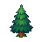
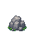
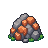
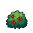
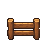
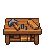
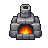
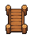
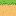
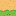
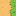
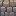
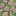
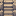
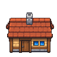
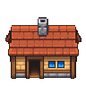
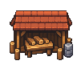
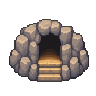
36 recursos iniciales. Escalas de muestra diferentes: terreno ×4, objetos ×2, edificios ×1. Pivotes, tamaños relativos y colisiones son provisionales. Bordes cardinales disponibles; esquinas y autotile pendientes. PNG nativos con alfa binario.

















